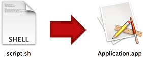

Platypus Documentation
For version 5.1. The latest version of this document can be found here.
Last updated on November 29th 2015, by Sveinbjorn Thordarson
Index
- Introduction
- The Basics
- Advanced Options
- Preferences
- Profiles
- Controlling GUI with script output
- Examples
- Updates
-
Frequently Asked Questions
- Can I use Platypus to create proprietary software?
- My script's output isn't being shown until the script is done
- Does Platypus support localizations?
- How does my script get the user's environment (e.g. PATH)?
- How can I pass specific arguments to my script?
- How do I uninstall Platypus?
- How do I get the source code to Platypus and Platypus-generated app binaries?
- How do I get the path to my application / bundled files within the script?
- How do Platypus-generated applications work?
- Can I change the dimensions of my app's window?
- Can I prompt for user input (STDIN) in my Platypus-wrapped scripts?
- Is there a way to sign Platypus-generated apps so they don't require GateKeeper approval?
- Can I pass arguments to a Platypus-generated app via the command line?
- Where is the command line tool installed?
- Can I customize the About window of a Platypus-generated app?
Introduction
About Platypus
Platypus is a Mac OS X developer tool that creates application wrappers around scripts. It turns interpreted scripts into regular Mac OS X applications that can be launched from the Mac OS X window environment -- e.g. the Finder or the Dock -- without requiring use of the command line interface.
Platypus was first conceived in 2003 and implemented using the Carbon APIs. It has since gone through over three dozen major updates, and is now entirely written in Objective C for the Cocoa APIs.
Platypus is free, open-source software distributed under the terms and conditions of the BSD license. This means the source code is freely available and you are free to modify and distribute it as you see fit. For more information on licensing, see Can I use Platypus to create proprietary software?.
While Platypus is free, it is the product of countless hours of work spanning well over a decade. If Platypus makes your life easier, please make a donation to support further development.
While I am happy to respond to feature requests, bug reports and questions concerning Platypus which are not addressed in this document, I cannot respond to queries about the particulars of scripting languages. Productive use of Platypus assumes that you are competent in your scripting language of choice.
Credits
Platypus was conceived and created by me, Sveinbjorn Thordarson <sveinbjornt@gmail.com>
The Platypus icon -- Hexley, the Darwin mascot -- was created by Jon Hooper, who was kind enough to grant me permission to use it as the Platypus application icon.
Thanks go to Troy Stephens, the original author of the IconFamily class used for icon handling in Platypus, Bryan D K Jones author of VDKQueue, Gianni Ceccarelli for contributing code on authenticated script execution, Matt Gallagher for secure temp file code, and Andy Matuschak for the Sparkle update framework. The OmniGroup Mac OS X Development mailing list and Stack Overflow have also been invaluable over the years.
Finally, I am much indebted to Wilfredo Sanchez, author of DropScript, the proof-of-concept project which inspired me to create Platypus in the first place.
How does Platypus work?
Regular Mac OS X applications are bundles -- special folders with a specific directory structure. An executable binary is stored in the bundle along with resources and configuration files. This binary is run when the bundle is opened in the graphical user interface.
Platypus creates applications bundles with a special executable binary that launches a script and captures its output. The binary can be configured to present the script's text output in the GUI in various ways, for example by showing a progress bar, a text view, a Status Item menu or a WebKit-based web view.
What Platypus is NOT
Platypus is not a set of bindings between the native Mac OS X APIs and scripting languages. It is not a full GUI development environment for Mac OS X and is not intended for creating substantial applications with complex and dynamic user interaction. If you want to create advanced Mac OS X applications, you should learn to program using the Cocoa APIs. Platypus is not and never will be a substitute for learning to use the excellent native application programming interfaces.
That being said, you may be able to add some interactive GUI elements using CocoaDialog or Pashua.
System Requirements
As of version 5.0, both the Platypus application and the applications it generates require Mac OS X 10.7 or later and are provided as 64-bit Intel binaries. If you want to target 10.6 and/or 32-bit systems, version 4.9 continues to work just fine. If you want to target 10.4 and PowerPC users, you can use version 4.4.
The Basics
Basic Interface
The basic Platypus interface is pretty straightforward. As soon as you launch the Platypus application, you see a window like this:

Press the Select Script.." button and select your script. Then configure the following:
App NameThe name of your application. Once you press the "Create" button, you will be prompted again for a name for your app. However, that will only be the name of the actual application bundle directory on the file system, so make sure you put in the proper application name here.
Script PathThis field contains the path to the script you create the app from. You either define this manually by typing the path into the text field (which supports shell-style autocomplete), or by pressing the Select button and selecting it in a navigation dialog (or by dragging your script on to the Platypus window).

Once you have selected a valid script, you can press the Edit button to open it in your default text editor. Platypus includes a very basic built-in text editor. You can change this in the Preferences if you want to use a more capable external text editor.
The New button creates a text file for you in Platypus' Application Support folder and opens it in your default editor. The Reveal button reveals the script file in the Finder.
Interpreter
Script Type
Here you can specify the scripting language you are using. You can either select one of the predefined scripting languages from the the pop-up menu or type in the path to an interpreter binary of choice.
Most of the time, you do not need to specify this manually. Whenever you select a script file, Platypus automatically tries to determine what kind of script it is by looking at the file suffix and shebang (#!) line. If you have specified this meta-data in the script file itself, Platypus is usually smart enough to figure it out.
Please note that the interpreter you selected must exist on the Mac OS X system where the application runs. All the preset scripting language interpreters (e.g. shell, Perl, Python, PHP, Tcl, Expect etc.) are a standard part of all Mac OS X installations.
Args let you specify arguments to the script and/or its interpreter.

Interface

Interface sets the user interface for the application. Platypus provides six interface types:
None
Windowless application that provides no graphical feedback. All script output is redirected to STDERR.
Progress Bar
A small window with an indeterminate progress bar and a "Cancel" button appears during the execution of the script. Script output is fed line by line into the text field above the progress bar. "Show details" triangle reveals a small text view containing full script output.

Text Window
Shows a window with a text view which displays script output. Please note that the text view is not a full, interactive terminal session, and cannot prompt for input from the user via STDIN. It does not support any of the standard terminal commands and cannot be used to display ncurses-based interfaces.
The styling and properties of the text view can be set by pressing the Text Settings button. This shows a window where text encoding, font, color and size can be configured.

Web View
Output from the script will be rendered as HTML in a WebView window. This allows you to use HTML formatting and web technologies to provide feedback on script execution.
The base directory for the browser instance is the application bundle's Resources directory, so you can bundle images and other support files by adding them to the Bundled Files list and referencing them relative to that directory.

Status Menu
Application creates a Status Item in the menu bar when launched. Every time the status item is clicked, the script is executed and its text output is shown line for line in a menu.
The properties of the Status Item (icon, title, etc.) can be configured by pressing the Status Item Settings button.

Droplet
Creates a square window instructing the user to drop files on it for processing. While processing, script output will be displayed line for line within the box along with an indeterminate circular progress indicator.

Setting the Icon
Platypus lets you set an icon for your application. You can pick from the icon presets, paste your own image or select an image or icon file.
Please note that having Platypus create the icon from an image file will typically not result in an icon that looks good in smaller sizes. For best results, use professional Mac OS X icon-editing software and specify a carefully crafted .icns file using the Select .icns file option.
Identifier, Author and Version
The Identifier text field sets the unique identifier for the application. If you have already provided an application name, this will default to something in the form of "org.username.YourAppName".
Every Mac OS X application has a unique string called a bundle identifier, which takes the form of a reverse DNS name (e.g. "com.apple.iTunes" or "org.sveinbjorn.Platypus"). Platypus automatically formats the bundle identifier using the application name and default user name, but you can set it to something else if you want to. The default bundle identifier prefix used to autogenerate the identifier can be configured in the Preferences.

You can also set Author and Version metadata. This information will appear in the "Get Info" window for your application in the Finder.
Special Options

Requires Administrator privileges: If selected, the application prompts for an Administrator password and executes the script with escalated privileges via Apple's Security Framework. This is not strictly equivalent to running the script as the root user. For details, see the documentation for Apple's Security Framework.
Platypus scripts must not use the 'sudo' command. This causes the script to prompt for input via STDIN, and since none is forthcoming, the application will hang indefinitely.
Please note that if this option is selected, the script will not print STDERR output due to limitations in the Security APIs. This can be circumvented by using a shell script to execute another script while piping STDERR into STDOUT (e.g. perl myScript.pl 2>&1).
Secure bundled script: Script is bundled into the generated application in an obfuscated format. Please note that this will not prevent anyone remotely serious from getting a clear-text version of the script. In order for the script to be executed, it must be presented in clear text to the interpreter. It is therefore never safe from prying eyes.
Runs in background: If selected, the application registers itself as a User Interface Element. This means the application icon will not show up in the Dock while the app is running.
Remain running after completion: This option tells the application to stay open once the script has been executed.
Bundled Files
The Bundled Files list shows files that should be copied into the Resources folder of the resulting application bundle. These files can then be used by your script, which is run from the Resources directory.

See also How do I get the path to my application / bundled files within the script? in the FAQ.
Advanced Options
Accepting files and dragged items
Selecting Accept dropped items makes the application bundle accept drag and dropped files, or dragged text snippets. If this option is selected, a small button called Settings appears next to the checkbox. Pressing it opens the Drop Settings window, where it is possible to specify which file types and draggable data the application accepts.

Selecting Accept Dropped Files results in the paths of dropped or opened files being passed on to the script as arguments. The default behaviour for applications is to accept all file suffixes, but it is also possible to specify a limited set of suffixes or Uniform Type Identifiers (NB: If you provide UTIs, the suffixes are ignored by Mac OS X launch services).
To accept dragged folders, add the UTI public.folder. HINT: You can drag files from the Finder into the suffix or UTI list to add their respective suffix/UTI.
Optionally, select a document icon (.icns file) for the files "owned" by your app.
Selecting Accept Dropped Text makes the app accept dragged snippets of text, in which case the dragged text string will be passed to the script via STDIN.
Provide as a Mac OS X Service makes the app register as a Dynamic Service, accessible from the Services submenu of application menus.
Build-Time Options
Platypus allows you to create development versions of your script application. Ordinarily, Platypus will copy your script and any bundled files into the application it creates. If Development Version is selected in the Create app dialog, a symlink to the original script and bundled files is created instead. This allows you to work on your script while testing it as a Platypus app. For obvious reasons, this option is not compatible with the "Secure bundled script" option.

Optimize Application: Strip and compile the nib file in the application in order to reduce its size. This makes the nib uneditable. Only works if XCode is installed.
Use XML property lists instead of binary: Create human-readable and human-editable plain text XML property lists in the application bundle. XML property lists are slower to parse and use up more space, but can be edited with a plain text editor, whereas binary property lists can only be edited using XCode or third-party Apple Property List editors.
Built-In Editor
Platypus includes a very basic built-in text editor for editing scripts within the application. Press the Edit button to bring it up.

A more capable external editor can be chosen in Preferences.
Syntax Checking
The Check Script Syntax menu item lets you verify the syntax of your script. This runs the currently specified script through the interpreter's syntax checker and report the results.
This feature is only supported for scripts with an interpreter that supports syntax checking (Bash, Perl, Python, Ruby and PHP).

Show Shell Command
Platypus includes a command line tool equivalent to the Platypus.app application, which can be installed into /usr/local/bin/platypus via Preferences. The man page for this tool is available from the Help menu, and via the command line. There is also an online version of the man page.
Under the Advanced menu there is a menu item called Show Shell Command. Selecting this item will bring down a sheet with a text field containing a command line command for executing the platypus command line with the options you selected in the graphical interface. This can be helpful if you have the command line tool installed and wish to automate the creation of script apps within a larger build process.

Please note that Platypus.app is not a GUI frontend for the command line tool and, depending on the current state of development, the command line tool may or may not have feature parity with the Mac OS X application.
The command line tool does not in any way depend on the Platypus application once it has been installed.
Preferences
The Platypus Preferences should be pretty self-explanatory. You can select an editor of choice, set the default author and bundle identifier settings, set default text encoding, set the behaviour of Platypus on app creation, and install/uninstall the platypus command line tool.

Profiles
Saving and Loading
Profiles let you save Platypus application configuration settings. These can then be loaded by Platypus or the platypus command line tool. The Profiles menu is used to save and access profiles. Profiles are stored as files, typically in the Profiles folder of the Platypus Application Support folder.
You can load a profile by selecting it from the menu, which lists all profiles in the Profiles folder. To reveal a profile in the Finder, hold down the Command key and select the profile. Profiles have a .platypus filename suffix.

Using Profiles with the Command Line Tool
Profiles can be used with the platypus command line tool. This allows you to set all the settings for your application within the graphical user interface, save them as a profile and then load the settings with the command line app. This makes automation more convenient. The following command would load a profile with the command line tool and create an app from it named MyApp.app:
/usr/local/bin/platypus -P myProfile.platypus MyApp.app
See the command line tool man page for further details. An HTML version of the man page is available here.
Platypus Profile Format
Platypus Profiles are standard Mac OS X property lists in XML format. They can be edited using either a plain text editor or XCode.
Controlling GUI with script output
Showing an Alert
Platypus application wrappers can be made to show an alert if your script prints out a line using the following syntax:
ALERT:Title|Text\n
Thus, to show an alert with the title "Hello" and the informative text "World", you would do as follows:
ALERT:Hello|World\n
Showing a Notification
Platypus application wrappers can be made to show a notification in the User Notification Center if your script prints out a line using the following syntax:
NOTIFICATION:My notification text\n
Controlling the Progress Bar
Script apps with the interface type Progress Bar can communicate with the progress bar by notifying it of script progress. All lines of script output in the format "PROGRESS:\d+\n" (e.g. PROGRESS:75) are parsed and used to set the completion percentage of the progress bar. Similarly, DETAILS:SHOW and DETAILS:HIDE can be used to change the visibility of the Details text field during the execution of the script.
Terminating Application
If your script prints the string "QUITAPP\n" to STDOUT, the application will quit.
Loading a Website into a Web View
If interface type was set to Web View and your script prints "Location:http://some.url.com\n", the Web View will load the URL in question.
User interaction with CocoaDialog
Platypus can be used with CocoaDialog to construct scripts that prompt for user input with dialogs and returns user choices. CocoaDialog is documented adequately here.
To use it with Platypus, download CocoaDialog.app, and add it to the list of Bundled Files.
The following script shows of how to query for input using the bundled copy of CocoaDialog:
#!/bin/bash
CD="CocoaDialog.app/Contents/MacOS/CocoaDialog"
rv=`$CD yesno-msgbox --string-output`
$CD ok-msgbox --no-cancel --text "You pressed $rv"
This Platypus application will present the user with an alert and several buttons. When the user presses one of the buttons, a feedback dialog is generated notifying the user which button he pressed. While this particular script accomplishes nothing, it serves as an example of how to add interactive elements to a script.
Creating an interactive Status Menu app
As of Platypus 4.9, it is now possible to build relatively sophisticated interactive Status Menu apps. Platypus-generated apps with Interface set to Status Menu show a Status Item in the menu bar when launched. When the item is pressed, a menu is opened, the script is executed and each line of output is shown as a menu item in the menu.
When the user selects a menu item, the script is executed again, but this time it receives the menu title as an argument. Based on whether it receives an argument, the script can thus determine whether it is being invoked to list the menu items or in order to perform some action for a selected menu item.
If this seems unclear, check out the following script, which is part of the MacbethMenu Example:
#!/usr/bin/perl
# If 0 arguments, we show menu
if (!scalar(@ARGV)) {
print "Life's but a walking shadow, a poor player\n";
print "That struts and frets his hour upon the stage\n";
print "And then is heard no more.\n";
} else {
# We get the menu title as an argument
system("/usr/bin/say \"$ARGV[0]\"");
}This script creates a Status Menu app which shows a few lines of Shakespeare's Macbeth as menu items. When selected, the title of the menu item in question is fed into the Mac OS X speech synthesizer via /usr/bin/say.
Prompting for input via osascript/AppleScript
Scripts can also prompt for input by passing some AppleScript code to the osascript program. See example in Perl below:
#!/usr/bin/perl
use strict;
sub osascript($) { system 'osascript', map { ('-e', $_) } split(/\n/, $_[0]); }
sub dialog {
my ($text, $default) = @_;
osascript(qq{
tell app "System Events"
text returned of (display dialog "$text" default answer "$default" buttons {"OK"} default button 1 with title "Riddle")
end tell
});
}
my $result = dialog("Answer to life, the universe and everything?", "42");
Examples
Built-In Examples
Platypus includes a number of built-in examples. These can be opened in the Examples submenu of the Profiles menu. You can open the script file associated with each example to see how they work. Brief explanation of each of the examples:
AdminPrivilegesDemo: Demonstrates running script with Administrator privileges by creating a file in /etc/ and testing for its existence.
AlertMe: Demonstrates ALERT: and PROGRESS: syntax in action by showing alerts while manipulating the progress bar.
DataURLifier: Drop a file on window to get its Data URL.
FastDMGMounter: Creates a replacement for Mac OS X's DiskImageMounter, uses the command line tool to mount
.dmgdisk images much faster, skipping verification and auto-accepting any EULAs. See this page for details.IcnsToIconset: Converts Apple .icns icon files to iconset folders with PNGs for the various representations.
ImageResizer: Shows how to use the built-in Mac OS X Scriptable Image Processing System (see
man sips) to resize dropped images to 512x512 dimensions.MacbethMenu: Simple interactive status menu app which displays lines by Shakespeare and feeds them to the speech synthesizer when selected.
PostToNotificationCenter: Creates notifications in Notification Center via script output using the custom NOTIFICATION: syntax.
ProcessMenu: Creates a status menu which displays the output of
ps caxwhen clicked.ProgressBar: Demonstrates how the status of the progress bar can be controlled with script output.
SpeakDroplet: Uses the Mac OS X speech synthesiser to read all opened text files.
SpotlightInfo: Drag a file on window to see its Spotlight metadata.
StatusMenuIconDemo: Shows how to set menu item icons in with the Status Menu interface.
SysLoadMenu: Status menu app which displays the output of
w.SystemProfiler: Displays all profiling information about your system in a text window. Uses Apple's
system_profilertool.TarGzipper: Creates a gzipped tar archive of any dropped files.
WordCountService: Dynamic Service app which does a word count of received text and shows in an alert.
If you come up with a particularly nifty use of Platypus, it might make a suitable addition to this list. If you think this is the case, then by all means send it to me at sveinbjornt@gmail.com.
Updates
Updating Platypus
Platypus uses the Sparkle framework for updates. This means you can update the application by selecting Check for updates... in the application menu.
Future releases may or may not break your saved profiles. Consult the version change log for details.
The Appcast RSS XML file is located here if you want to follow updates programatically.
To get the absolutely latest in-development version of Platypus, you can check out the source on the master branch on GitHub.
Frequently Asked Questions
Can I use Platypus to create proprietary software?
Yes. Platypus is distributed under the terms and conditions of the three-clause BSD License, which means that you are free more or less free to do as you see fit with Platypus and any applications you create using it.
My script's output isn't being shown until the script is done running
You need to autoflush the script output buffer. In Perl, this is done with the following command at the start of your script:
$| = 1;
In Python, you can pass the -u parameter to the interpreter to get unbuffered output, or alternately flush the output buffer in code:
import sys
sys.stdout.flush()
For help with other interpreters, Stack Overflow is your friend.
Does Platypus support localizations?
No. But if you don't select "Optimize nib file" in the save dialog when creating an app, the resulting nib in the application bundle can be edited using XCode. You can thus localize your app manually if you want to. Localization support is very low on the feature roadmap, since it can be adequately addressed using the aforementioned method.
Please do not send me localizations for the Platypus application itself, since I will not include them in the official distribution. Localizations use up disk space and bandwidth, inhibit the speed and freedom of development and are tedious to maintain. To my mind, it just isn't worth the hassle for a specialized developer tool.
How does my script get the user's environment (e.g. PATH)?
Assuming that you're using bash, you can set the interpreter to /bin/bash and add the -l flag as an argument under "Args". This makes bash act as if it had been invoked as a login shell. See man bash for details.
How can I pass specific arguments to my script?
You can edit arguments to both the script interpreter and the script itself by pressing the Args button next to the Interpreter controls.
How do I uninstall Platypus?
Platypus parsimoniously uses only about 5MB of disk space, but if you want to remove it entirely, along with support files, profiles, etc., you can select Uninstall Platypus from the Platypus application menu. This will uninstall the command line tool (if you have previously installed it), and move the Platypus.app and all its supporting files -- including Profiles -- to the Trash.
How do I get the source code to Platypus and Platypus-generated app binaries?
The Platypus master source tree can be found on GitHub.
The source code to the binary used in Platypus-generated apps is ScriptExecController.m.
Please let me know if you make any improvements or fix any bugs, so I can incorporate them into the official release.
How do I get the path to my application and/or bundled files from within the script?
The script executed by Platypus-generated applications runs from the Resources directory of the application bundle (e.g. MyApp.app/Contents/Resources). Any bundled files are thus accessible from the script's current working directory.
For example, if you have added file.txt as a bundled file and want to copy it over to the user's home directory using a shell script, you would run the following command:
cp file.txt ~/
To get the path to the application bundle itself, or the directory it is in, you can use ../.. (application bundle) or ../../.. (application bundle's containing directory).
How do Platypus-generated applications work?
Platypus-generated applications are Mac OS X application (.app) bundles, and have the following directory structure:
MyApp.app/ - Application bundle folder MyApp.app/Contents MyApp.app/Contents/Info.plist - Info property list for app MyApp.app/Contents/MacOS MyApp.app/Contents/MacOS/MyApp - Application binary MyApp.app/Contents/Resources - Resources folder MyApp.app/Contents/Resources/appIcon.icns - Application icon MyApp.app/Contents/Resources/AppSettings.plist - Application script execution settings MyApp.app/Contents/Resources/MainMenu.nib - Nib file, stores interface layout MyApp.app/Contents/Resources/script - Script executed by application binary
The application binary reads settings from AppSettings.plist and then runs the script, making use of the user interface assets in the nib file to display the script's output.
The source code to the binary is ScriptExecController.m. Skimming it should give you a fairly thorough understanding of what the executable does. It's very simple.
Can I change the dimensions of my app's window?
Yes, but only by altering the application manually after it has been created. When you press Create, you need to uncheck the "Optimize Application (strip nib file)" option in the dialog. You can then edit the user interface assets in the nib file using Apple's XCode. The nib file is stored at the following path within your application bundle.
Contents/Resources/MainMenu.nib
If you want to keep your own modified nib for repeated use, you can simply save a copy, edit it and add it to Bundled Files when you create an app. It will then overwrite the default MainMenu.nib file:
The Platypus command line tool also allows you to specify an alternate nib file using the -H flag. See the man page for details.
Can I prompt for user input (STDIN) in my Platypus-wrapped scripts?
No. Platypus applications do not present the user with an interactive shell, and therefore no bidirectional communication can take place using standard input. Platypus apps can only capture, parse and display the text output of your script. They cannot prompt for input via STDIN, and will not be able to do so in the foreseeable future. This means that any commands that require input via STDIN, such as sudo, will not work from within a Platypus application.
Is there a way to sign Platypus-generated apps so they don't require GateKeeper approval?
Neither Platypus nor Platypus-generated apps are signed. Due to GateKeeper, this means they will not run on Mac OS X without prompting the user for approval. There are no plans to change this in the future. Apple developer accounts cost money and I have no intention of paying Apple for the privilege of maintaining and developing free software for Mac OS X. In any case, having people use binaries signed by me to run their scripts out in the wild sounds like a pretty bad idea.
You can always sign the Platypus binaries yourself, but it's a laborious task. First, you need a paid ADC account for Mac development. Secondly, you need to download the Platypus source code. After that, you need to build and sign your own version of the ScriptExec binary using Apple's XCode. Your can then manually replace the the binary in the Platypus-generated application bundle with your signed version.
Detailed instructions on how to do this are beyond the scope of this document. There be dragons.
Can I pass arguments to a Platypus-generated app via the command line?
Yes. You can execute a Platypus-generated binary via the command line. Any arguments you provide will be passed on to your script. Take the following example:
# ./MyApp.app/Contents/MacOS/MyApp -arg1 -arg2
In this case, both -arg1 and -arg2 will be passed on as arguments to your script. This feature makes it possible to create protocol handlers for Firefox and other programs that invoke Mac OS X applications from the shell.
Where is the command line tool installed?
The Platypus command line tool install script creates the following files on your system:
/usr/local/bin/platypus Program binary
/usr/local/share/platypus/ScriptExec Executable binary
/usr/local/share/platypus/MainMenu.nib Nib file for app
/usr/local/share/platypus/PlatypusDefault.icns Default icon
/usr/local/share/man/man1/platypus.1 Man page
These files are all removed by Uninstall Platypus in Platypus application menu.
Can I customize the About window of a Platypus-generated app?
If you add a file named Credits.rtf or Credits.html to the bundled files list, it will be displayed in the About window of your application.
Copyright © 2003-2015 Sveinbjorn Thordarson <sveinbjornt@gmail.com>